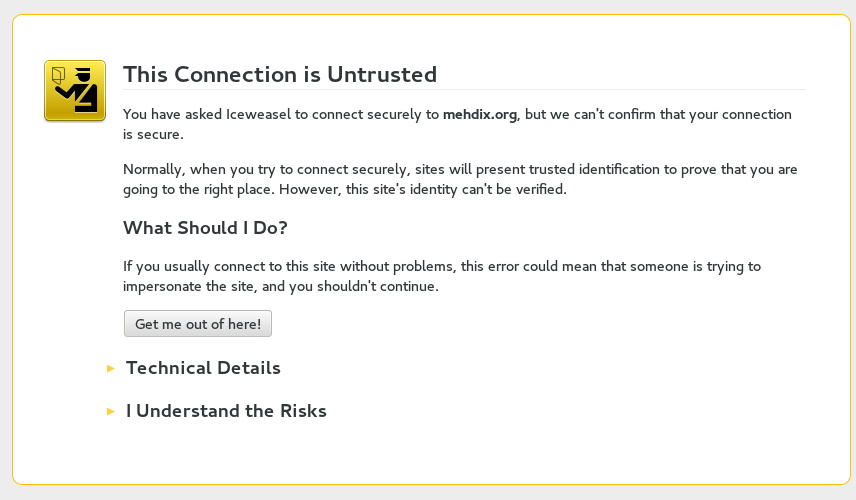

گواهینامه SSL/TLS مجّانی برای همه
دوشنبه ۱۲ بهمن ۱۳۹۴
۳ دقیقه مطالعه
امروز در جریان یک خبر خوشحال کننده قرار گرفتم. اگر تا پیش از این میخواستیم یک گواهینامه SSL/TLS معتبر برای استفاده از پروتکل HTTPS برای وبسایتمان تهیه کنیم باید یک گواهینامه میخریدیم. دیگر نیازی به اینکار نیست.
وضعیت قبلی: دلالی گواهینامه معتبر
برای خرید یک گواهینامه ساده باید تقریبا ده دلار خرج کرد، حالا کمی کمتر یا بیشتر. اینکار هم هزینه دارد هم دردسر. باید یک واسطه پیدا کرد که روش پرداخت ما را قبول کند، یا از شرکتهای واسط دیگر استفاده کرد. تازه در نهایت سادهترین نوع گواهینامه گیر آدم میآید. اگر بخواهیم برای یک زیردامنه هم از گواهینامهمان استفاده کنیم باید که هزینه بیشتری پرداخت کرد. همینطور که نیاز به گواهینامه تغییر میکند باید دائم هزینه کنیم. بدتر از همه اینها اینست که امنیت وب تبدیل به یک کسب و کار شده است و این اصلا چیز خوبی نیست. امنیت باید در وب به صورت پیشفرض وجود داشته باشد، آنهم برای همه، نه به شرط پول خرج کردن.
امنیت باید در وب به صورت پیشفرض وجود داشته باشد، آنهم برای همه، نه به شرط پول خرج کردن
البته ما همچنان میتوانسیتم گواهینامههای به اصطلاح Self Signed تولید کنیم اما موقع باز کردن وبسایت همیشه مرورگر یک پیام هشدار مبنی بر ناشناخته بودن گواهینامه نمایش میداد که این هم چیز خوبی نبود.

وضعیت فعلی: گواهینامه معتبر برای همه
حالا مدتی است که یک Certificate Authority (CA) جدید بوجود آمده است. نامهای شناخته شدهای پشت این حرکت هستند، مثل Mozilla. نام این CA جدید Letsencrypt است. این CA به ما امکان تولید گواهینامههای معتبر توسط خودمان را میدهد. این CA الان مدتی است که وارد فاز بتا شده است و از یک جنبش به یک واقعیت تبدیل شده است. برای تولید یک گواهینامه معتبر کافیست دستوراتی که در سایت آنها آمده است دنبال کنیم.
روش تولید یک گواهینامه
این CA به ما یک برنامه به نام letsencrypt-auto میدهد که به کمک آن گواهینامههای معتبر ۹۰ روزه تولید میکنیم. این برنامه کمکی علاوه بر این میتواند وب سرور آپاچی و به صورت آزمایشی nginx را به طور خودکار بروز کند. باید به ترتیب کارهای زیر را روی سرور وب انجام داد (به نقل از خود سایت).
ابتدا برنامه را از روی گیتهاب دریافت و اجرا میکنیم تا نیازمندیهایش را نصب کند:
$ git clone https://github.com/letsencrypt/letsencrypt
$ cd letsencrypt
$ ./letsencrypt-auto --help
اگر آپاچی داریم دستورش این است:
./letsencrypt-auto --apache
اگر هم سرور دیگری داریم و فقط فایلهای گواهینامه را میخواهیم روش کار اینست:
./letsencrypt-auto certonly --webroot -w /var/www/example -d example.com -d www.example.com
برای من برنامه فایلها را تولید کرد و در آدرس /etc/letsencrypt/live کپی کرد. برای تجدید گواهینامه (که این هم مجانی است!):
./letsencrypt-auto certonly --keep-until-expiring --webroot -w /var/www/example.com -d example.com,www.example.com
دستورات بیشتری در صفحه راهنمای پروژه جهت مطالعه وجود دارد.
وضعیت آینده: تولید خودکار گواهینامه
صفحه کلاینت این پروژه روی گیتهاب تابحال بیش از ۱۱۷۰۰ ستاره خورده است. همین کافیست که ببینیم این پروژه بسیار مورد توجهی است. پروژه هم بیش از ۵۰۰۰ کامیت و ۱۴۷ مشارکتکننده دارد. همه اینها یعنی که این پروژه را از نظر دور نکنیم. به گفته خودشان بزودی نسخهای منتشر خواهند کرد که هم سرورهای وب بیشتری را پشتیبانی میکند و هم فرآیند تولید گواهینامه را به طور خودکار چند وقت یکبار انجام میدهد و نیازی به مداخله کاربر نیست.
من همین امروز برای سه تا وبسایت گواهینامه معتبر ساختم و از شر گواهینامههای Self Signed خلاص شدم :)